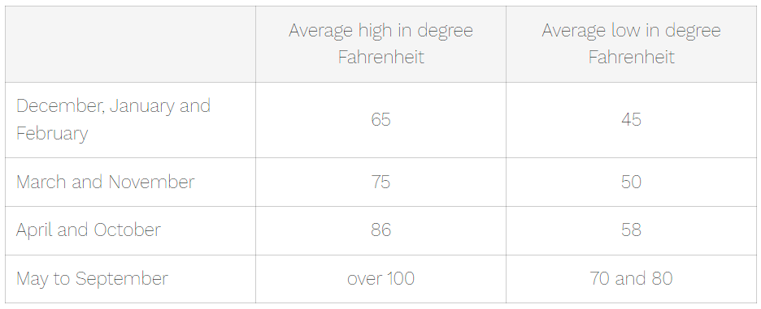

Laughlin Strip map and it's 10 most popular questions answered.
Nov 3rd 2023 - 6 min read
In This Article
1. Is Laughlin, Nevada worth visiting?
If you ask anyone who has been to Laughlin if Laughlin, Nevada, is worth visiting, you will likely hear this answer: "It is a mini version of Las Vegas that is quieter, with an older average age than in Las Vegas." If you prefer gambling without the younger crowds, you'll enjoy Laughlin. If you appreciate nature, you'll definitely love Laughlin, as it is surrounded by beautiful mountains, and the Laughlin Strip runs along the Colorado River.
Are you planning a trip to Laughlin and, like me, are the kind of person who wants to know everything about your destination before you go? Well, I will try my best to answer general questions that people have asked us while doing one of our off-road experiences.
2. What are the best months to visit Laughlin?
If you dislike extremely hot weather, like I do, you'll love Laughlin from October to April. My favorite month is October because the temperature is not too hot, and the water is still warm enough for swimming. If you want to take advantage of the water, I would definitely choose October. March and April are also really good months but keep in mind that the snow melt from the Colorado mountains is what will be in the Colorado River (extremely cold especially in March, and I know this from experience, because my first time here we went jet skiing in March! Brrrr!!!).
During the winter months (December, January and February) the temperature will average at about 65 degrees Fahrenheit as highs and about 45 degrees Fahrenheit at night.
March and November have average highs in the mid 70's and lows in the 50's.
April and October have average highs at about 86 degrees and lows around 58 degrees.
The months from May to September have highs over 100 degrees.
The advantages of the months of May and June over July August and September is that you might have a cool breeze refresh you once in a while whereas in the summer months you have a hot blow drier in your face anytime the wind is there.
3. Does Laughlin have a strip? (View the map to the strip)
Yes, it does!
Is it as long as the Las Vegas Strip? Not quite! The Las Vegas Strip spans 5.2 miles (from the Welcome to Las Vegas sign to The Strat hotel), while the Laughlin Strip (from the Chamber of Commerce to Harrah's Hotel and Casino) covers approximately 1.87 miles, which is quite a bit less than half. However, its location along the Colorado River makes it particularly appealing to nature lovers. You can stroll along the Riverwalk and enjoy the scenic beauty of the water.
In the map of the Laughlin Strip below, you can see the blue dotted line, which represents the Laughlin Strip.

4. What casinos and hotels are on the strip of Laughlin?
There are 9 Casinos on the Laughlin strip and 8 of them are also hotels. If you click on the interactive map, you will be able to see the 9 Casinos and where they are located. The closest hotel to the north bridge is Don Laughlin's Riverside Resort Hotel and Casino. On the map you do not see a bridge on the south of Harrah's because it is under construction, but it should be fished soon.

Here are the 9 Casinos from the North bridge (the only casino that is not a hotel is the Regency Casino):
Don Laughlin's Riverside Resort Hotel and Casino:
1650 S Casino Dr, Laughlin, NV 89029
www.riversideresort.com
+1 702-298-2535
Aquarius Casino Resort:
1900 S Casino Dr, Laughlin, NV 89029
www.aquariuscasinoresort.com
+1 702-298-5111
Regency Casino:
1950 S Casino Dr, Laughlin, NV 89029
www.regencylaughlin.com
+1 702-299-1220
Edgewater Casino:
2020 S Casino Dr, Laughlin, NV 89029
www.edgewater-casino.com
+1 702-298-4000
Tropicana:
2121 S Casino Dr, Laughlin, NV 89029
www.caesars.com/tropicana-laughlin
+1 702-298-4200
The new Pioneer Hotel and Casino
2200 S Casino Dr, Laughlin, NV 89029
www.laughlinpioneer.com
+1 702-298-2442
Golden Nugget Laughlin Hotel and Casino:
2300 S Casino Dr, Laughlin, NV 89029
www.goldennugget.com/laughlin/
+1 702-298-7111
Laughlin River lodge:
2700 S Casino Dr, Laughlin, NV 89029
www.laughlinriverlodge.com
+1 702-298-2242
Harrah's Laughlin
2900 S Casino Dr, Laughlin, NV 89029
www.caesars.com/harrahs-laughlin
+1 702-298-4600
5.Why is Laughlin so popular?
I think that Laughlin is popular because of everything that it has to offer at a fraction of the price of Las Vegas.
Also, Laughlin is peaceful because it is in the middle of nature.
There is entertainment in all the casinos and an exceptional event center situated outdoors. I saw Pitbull at the Laughlin Event Center hosted by Golden Entertainment in May 2022 and let me tell you there is nothing like dancing outdoors to your favorite artist with the breeze in your face!


It's a preferred destination for golf enthusiasts, thanks to its ideal winter temperatures.
In summer there are all the water activities like swimming, fishing, and renting a jetski.
And you can't forget about the off roading! Laughlin is surrounded by the Mojave Desert that can be explored in UTV's.
6. Is Laughlin cheaper than Las Vegas?
Laughlin is so much cheaper than Las Vegas. You will probably not find the fancy restaurants and drinks, but you will not have to pay an extremely high price like in Las Vegas eighter.
I don't think that these 2 cities should be compared as the only thing, in my opinion that they have in common is a strip of hotels and casinos. Apart from the casinos these 2 cities are completely different and Laughlin a lot cheaper.
7. Can you walk between casinos in Laughlin?
Walking between casinos in Laughlin makes this town so charming. You can walk on the sidewalk beside S. Casino drive or on the Riverwalk.
And, if you're tired and prefer not to walk back to your hotel, you can hop on a water taxi, creating a delightful memory of your time in Laughlin.
8. How long is the Laughlin Riverwalk?
The Riverwalk on the Laughlin Strip extends just over 1 mile, starting from the parking lot of Don Laughlin's Riverside Resort Hotel and Casino and ending at Laughlin River Lodge.
If you look at the green line on the map you will see the part of the Riverwalk that is on the strip.
If you feel adventurous you can walk out of the Laughlin strip from the Don Laughlin's Riverside Resort Hotel and Casino to the Davis Dam on this same Riverwalk Trail.
The views are beautiful during the day as you can enjoy the Colorado River and Bullhead City. The views at night are awesome with all the casino lights on.
It is pretty hot in summer so don't forget to bring a lot of water and protect your skin with appropriate clothes and sunscreen. There are also certain times of the year when bugs are everywhere!
If you love hiking, there are a lot of hiking trails all around Laughlin and Bullhead City.
And if you want to discover more trails in less time you can always go off-roading with OUI Experience.
9. Can you walk around with alcohol in Laughlin?
You can walk around Laughlin with alcohol in an open container as long as you are 21 years old or over and the alcohol is not in glass or aluminum container. Also, you are not allowed to drink in some places like bus stops and near churches. You are also not allowed to have an open container of alcohol if you are within 1000 feet of the store where the alcohol was purchased. If you want to walk from 1 hotel to another with your drink you can ask for a plastic cup (or bring your own reusable cup) and you will be able to enjoy your drink as you walk.
10. Are drinks in Laughlin free?
In general, drinks are free as long as you are gambling in the Casinos on the strip of Laughlin. Gratuity is not included but is customary. You can order any mixed drink or shot. Keep in mind, however, that these complimentary drinks are smaller than drinks you would receive if you ordered one at the bar.
Conclusion
I hope I was able to answer some of your questions. You can also read Unwind on Your trip to Laughlin Nevada: An absolutely Relaxing Adventure to learn more about Laughlin. If you would like me to answer a question that was not covered in this article, please leave me a comment below.
If you want to explore the Mojave Desert, reach out to us at OUI Experience for an unforgettable Off-road tour in the Mojave Desert and we can help you plan the perfect adventure for you and your loved ones. Your relaxing adventure is just around the corner, and the memories you'll make are sure to last a lifetime.
Contact OUI Experience now to start your journey or follow us on social media for the latest updates and inspiration: https://www.ouiexperience.com